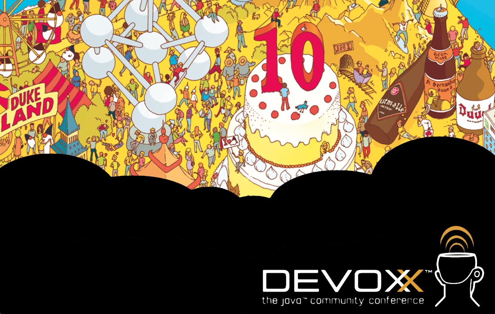
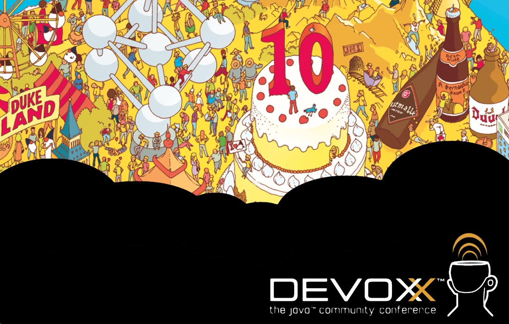

Javascript Redux
Pierre-Antoine Grégoire
Devoxx 2011, November 15th
Images when sourced (except for Devoxx pics)
are under Creative Commons .
.
are under Creative Commons

Pierre-Antoine Grégoire
Devoxx 2011, November 15th


Server-side HTML generation ASP/PHP/JSP/CGI == TAG SOUP

Object Literals (JSON is a subset)
var empty_object = {}; // easy isn't it?
var devoxx_guy = {
"first_name": "Stephan",
"last_name": "Janssen",
"@twitter": "@Stephan007"
}; // objects are mutable keyed collections (maps)
var javascript_reduxx ={
"presentation_title": "Javascript REDUX",
"date": "15/11/2011",
"time": {"start": "13h00","end": "13h15"},
"speaker":{"first_name": "Pierre-Antoine","last_name": "Grégoire","@twitter_account": "@zepag"}
}; // objects can be nested
// . notation for value retrieval
var stephan = devoxx_guy.last_name;
// [ ] notation if key is not legal Javascript name or reserved word
var spkr_twitter = javascript_redux.speaker["@twitter"];
Functions as first class citizen:
var add = function(a,b) {return a + b;}; // functions can be stored in variables
var sum = add(1,2); // and invoked further on
Function invocation patterns affect 'this'
// function invocation pattern kick_the_cat_out(cat); // method invoked directly // !!! reckless. this===global object (window in browser DOM) // method invocation pattern cat.meow(3/*times*/); // meow is a property of cat. this===cat // constructor invocation pattern new Cat(); // 'new' keyword is used. this === new Object // apply invocation pattern cat.meow.apply(dog,[3]); // powerful, explicit assignment of this can make a dog meow ;)
var myObject = (function(){
// 'private' to function scope
var value = 0;
return{ // returned object's function have access through Closure
increment = function (inc) {
value += typeof inc === 'number'? inc:1;
},
getValue = function () { return value;}
};
}());// anonymous function immediately invoked
var result=createAUser({first_name:"David",last_name:"Crockford"});
An example of a web server written in Node which responds with "Hello World" for every request.
var http = require('http');
http.createServer(function (req, res) {
res.writeHead(200, {'Content-Type': 'text/plain'});
res.end('Hello World\n');
}).listen(1337, "127.0.0.1");
console.log('Server running at http://127.0.0.1:1337/');
To run the server, put the code into a file example.js and execute it with the node program:
% node example.js Server running at http://127.0.0.1:1337/
https://github.com/joyent/node/wiki/modules
http://toolbox.no.de/
% npm install socket.io % node game/server/game.js info - socket.io startedRefresh this slideshow page when node is started
http://rawkes.com/blog/2011/11/06/creating-a-real-time-multiplayer-game-with-websockets-and-node.js
// eluding Devoxx,Person and Speaker ;)
var likedIt = function(person){return person.likedIt()?person:false};
var me =new Speaker({
"first_name": "Pierre-Antoine",
"last_name": "Grégoire",
"@twitter_account": "@zepag",
});
me.feels("Proud to be here");
var you = Devoxx.attendees({"roomNo":9,"time":"15/11/2011 13h15"});
var result=you.map(likedIt);
me.hopes(result.length > 0); // ;)